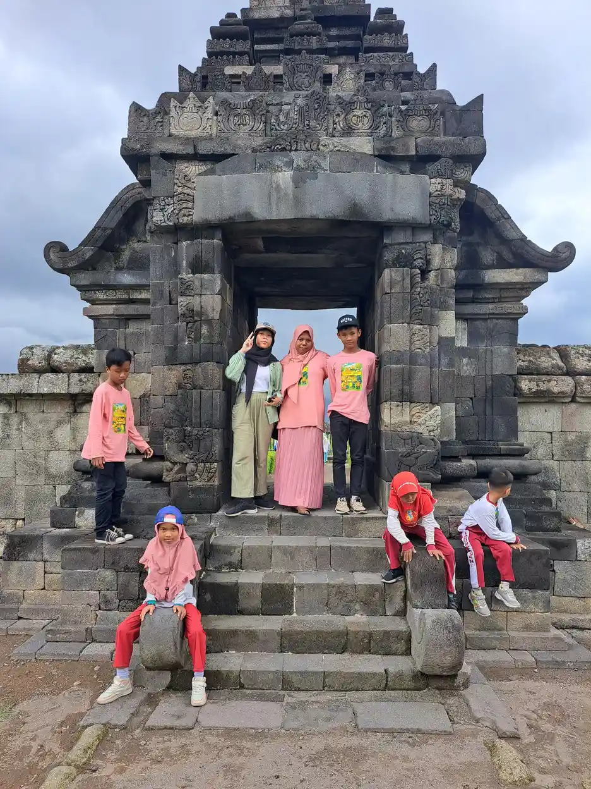
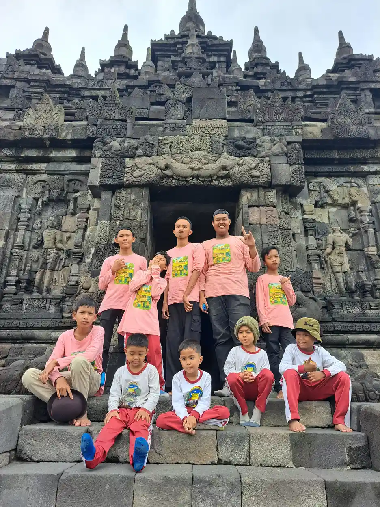
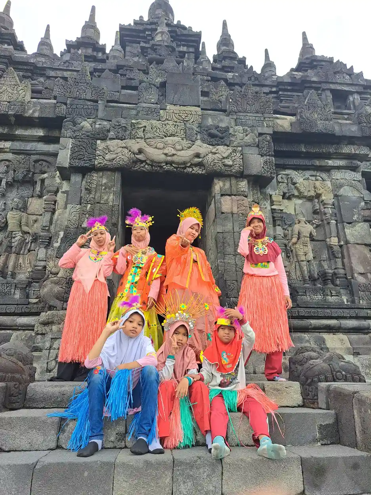
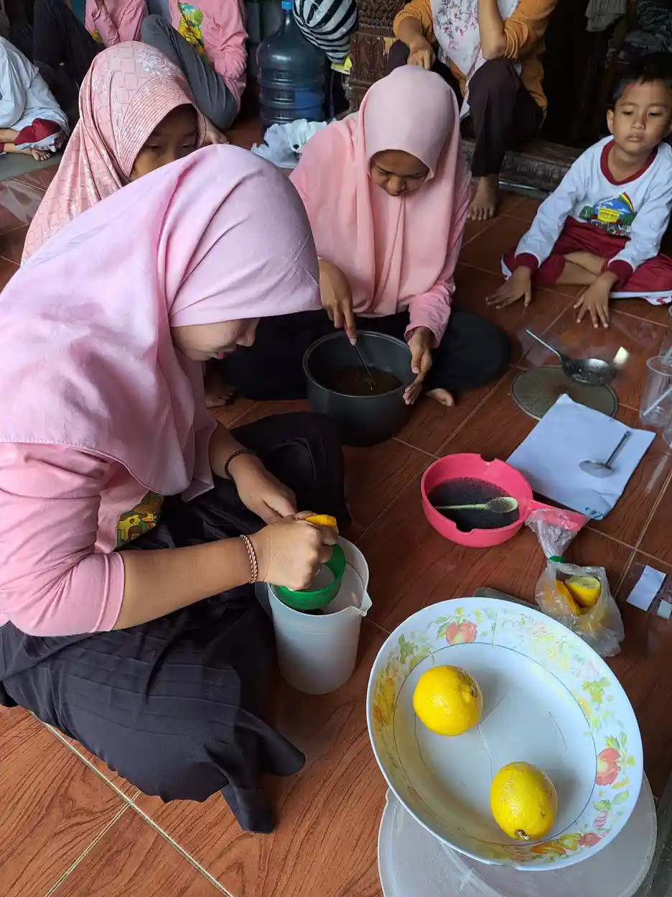

Jawaban singkat: penyebab tuna rungu pada anak dapat muncul sebelum lahir, saat lahir, atau setelah lahir. Penyebab yang paling sering dibahas lembaga kesehatan adalah faktor genetik, infeksi saat hamil seperti rubela dan CMV, bayi lahir kurang bulan atau berat lahir rendah, kuning berat, kekurangan oksigen saat lahir, meningitis, infeksi telinga kronis, obat yang merusak telinga, suara keras, dan cedera kepala. WHO memperkirakan hampir 60 persen gangguan pendengaran pada anak berasal dari penyebab yang dapat dicegah.
Daftar Isi
Gambaran Umum Penyebab Tuna Rungu pada Anak
Tuna rungu adalah istilah yang dipakai di Indonesia untuk anak atau orang dewasa yang mengalami hambatan pendengaran, dari ringan sampai sangat berat. Pengertian lengkap, ciri, dan cara berkomunikasinya sudah kami bahas di artikel tuna rungu adalah. Tulisan ini khusus menelusuri pertanyaan yang sering muncul setelah anak didiagnosis: mengapa hal ini terjadi, dan apa yang masih bisa dicegah?
CDC menjelaskan bahwa gangguan pendengaran bisa terjadi kapan saja sepanjang hidup, mulai dari sebelum lahir hingga dewasa. Kementerian Kesehatan juga menegaskan hal yang sama dalam peringatan Hari Pendengaran Sedunia 2026: gangguan pendengaran dapat terjadi sejak lahir hingga lanjut usia, sehingga pencegahan dan deteksi dini perlu dilakukan sejak awal.
Letak gangguannya juga memengaruhi penanganan. CDC membagi gangguan pendengaran menjadi empat jenis: hantaran (konduktif), sensorineural, campuran, dan gangguan spektrum neuropati auditori. Jenis hantaran sering dapat diobati dengan obat atau tindakan, sedangkan jenis sensorineural berasal dari telinga dalam atau saraf pendengaran. Perbedaan keduanya kami uraikan di gangguan pendengaran konduktif vs sensorineural.
Satu hal penting sebelum membaca lebih jauh: mengetahui penyebab bukan untuk mencari siapa yang salah. Banyak penyebab terjadi di luar kendali keluarga. Pengetahuan ini berguna untuk pemantauan adik atau kehamilan berikutnya, untuk memilih pemeriksaan yang tepat, dan untuk membantu tenaga kesehatan menyusun rencana dukungan.
Faktor Genetik dan Kondisi Bawaan
Faktor keturunan adalah penyebab yang paling besar porsinya pada bayi. Menurut CDC, sekitar satu dari dua kasus gangguan pendengaran pada bayi disebabkan faktor genetik. Sebagian bayi tersebut memiliki anggota keluarga yang juga mengalami gangguan pendengaran, tetapi tidak semuanya.
CDC juga mencatat bahwa sekitar satu dari tiga bayi dengan gangguan pendengaran genetik memiliki sindrom, artinya ada kondisi lain yang menyertai, misalnya sindrom Down atau sindrom Usher. Karena itu, anak dengan kondisi seperti down syndrome perlu diperiksa pendengarannya secara berkala, bukan hanya sekali saat lahir.
WHO membedakan gangguan pendengaran herediter dan nonherediter pada periode sebelum lahir, serta menyebut adanya gangguan pendengaran genetik yang baru muncul belakangan atau memburuk perlahan. Artinya, anak yang lolos tes saat lahir tetap bisa mengalami penurunan pendengaran beberapa tahun kemudian. Pemantauan perkembangan bahasa tetap penting walaupun hasil skrining awal baik.
Bagi keluarga yang memiliki riwayat ketulian, WHO memasukkan konseling genetik ke dalam strategi pencegahan. Konseling tidak dimaksudkan untuk menakut-nakuti, tetapi membantu keluarga memahami peluang, pilihan pemeriksaan, dan persiapan bila anak berikutnya juga membutuhkan dukungan.

Infeksi Saat Kehamilan: Rubela dan CMV
WHO menyebut infeksi di dalam kandungan, terutama rubela dan cytomegalovirus (CMV), sebagai penyebab gangguan pendengaran pada periode sebelum lahir. Kedua infeksi ini sering ringan atau bahkan tanpa gejala pada ibu, sehingga keluarga baru menyadarinya setelah bayi lahir.
Rubela (campak Jerman)
Lembar fakta WHO tentang rubela menjelaskan bahwa ibu yang terinfeksi di awal kehamilan memiliki peluang 90 persen menularkan virus kepada janinnya. Kerusakan paling berat terjadi di awal kehamilan, terutama trimester pertama. Bayi yang terdampak dapat lahir dengan sindrom rubela kongenital, yang bisa disertai gangguan pendengaran, kelainan mata, kelainan jantung bawaan, dan keterlambatan perkembangan.
WHO menyebut rubela sebagai penyebab cacat lahir terbesar yang dapat dicegah dengan vaksin, dengan perkiraan sekitar 100.000 bayi lahir dengan sindrom rubela kongenital setiap tahun di seluruh dunia. Vaksinasi adalah cara terbaik untuk mencegahnya, sehingga status imunisasi perempuan sebaiknya dipastikan sebelum merencanakan kehamilan.
Cytomegalovirus (CMV) bawaan
CDC menjelaskan bahwa gangguan pendengaran sering ditemukan pada bayi dengan infeksi CMV bawaan. Gangguan itu bisa sudah ada saat lahir atau baru muncul kemudian, termasuk pada bayi yang lolos skrining pendengaran bayi baru lahir. Gangguan bisa dimulai di satu telinga lalu mengenai telinga lainnya, dan dapat memburuk dari ringan menjadi berat selama dua tahun pertama, masa yang sangat penting untuk belajar bahasa.
Karena itu CDC menganjurkan bayi dengan CMV bawaan menjalani pemeriksaan pendengaran secara rutin. Bila dokter menyebut bayi pernah terinfeksi CMV, tanyakan jadwal pemeriksaan lanjutan dan catat di buku kesehatan anak.
Masa Persalinan dan Bayi Baru Lahir
Periode di sekitar kelahiran adalah kelompok penyebab berikutnya. WHO menyebut empat hal pada periode perinatal: asfiksia lahir atau kekurangan oksigen saat dilahirkan, hiperbilirubinemia atau kuning berat pada masa bayi baru lahir, berat lahir rendah, serta penyakit lain di masa perinatal beserta penanganannya.
CDC memberi gambaran yang lebih praktis untuk orang tua. Peluang gangguan pendengaran meningkat bila bayi dirawat lima hari atau lebih di ruang perawatan intensif bayi (NICU) atau mengalami komplikasi selama dirawat di sana, memerlukan prosedur khusus seperti transfusi darah untuk mengatasi kuning yang berat, atau memiliki bentuk kepala, wajah, maupun telinga yang berbeda dari biasanya.
Bayi yang lahir kurang bulan sering memiliki beberapa faktor ini sekaligus: berat lahir rendah, perawatan NICU yang lama, kuning, dan obat-obatan tertentu selama perawatan. Hal ini bukan berarti setiap bayi prematur pasti mengalami gangguan pendengaran. Namun bayi dengan riwayat tersebut sebaiknya dipastikan mendapat skrining sebelum pulang dan dipantau lebih teliti setelahnya.
Kuning pada bayi baru lahir umumnya ringan dan hilang sendiri. Yang dimaksud penyebab di sini adalah kuning berat yang membutuhkan penanganan khusus. Bila bayi tampak sangat kuning, lemas, atau malas menyusu, segera bawa ke fasilitas kesehatan. Penanganan yang cepat adalah bagian dari perawatan bayi baru lahir yang baik.

Infeksi pada Masa Anak: Meningitis dan Otitis Media
Setelah lahir, infeksi tetap menjadi penyebab penting. WHO menyebut tiga hal untuk masa anak dan remaja: infeksi telinga kronis yang bernanah (otitis media supuratif kronis), cairan di telinga tengah yang menetap (otitis media nonsupuratif kronis), serta meningitis dan infeksi lainnya.
Meningitis
Meningitis adalah infeksi pada selaput yang melapisi otak dan sumsum tulang belakang. CDC memasukkan riwayat meningitis ke dalam daftar hal yang meningkatkan peluang anak mengalami gangguan pendengaran. Anak yang pernah dirawat karena meningitis sebaiknya diperiksa pendengarannya setelah sembuh, walaupun tampak sudah pulih. Imunisasi rutin sesuai jadwal termasuk langkah pencegahan yang dianjurkan CDC.
Infeksi telinga tengah dan cairan di telinga
Infeksi telinga tengah sering dialami anak kecil. Bila infeksi berulang, telinga terus berair, atau cairan menetap di balik gendang telinga, suara sulit diteruskan ke telinga dalam. Gangguan seperti ini termasuk jenis hantaran, yang menurut CDC sering dapat diobati dengan obat atau tindakan. Karena itu infeksi telinga jangan dibiarkan berlarut, apalagi diobati sendiri dengan meneteskan bahan yang tidak dianjurkan dokter.
Pendengaran yang terganggu walau ringan dan sementara dapat membuat anak tampak tidak memperhatikan, sering meminta pengulangan, atau terlambat bicara. Bila orang tua melihat tanda ini, pemeriksaan telinga adalah langkah yang sederhana sebelum menyimpulkan anak memiliki masalah perilaku atau speech delay.
Obat Ototoksik, Suara Keras, Cedera, dan Faktor Lain
WHO mencantumkan sejumlah faktor yang dapat terjadi pada usia berapa pun: sumbatan kotoran telinga, cedera pada telinga atau kepala, paparan suara keras, obat-obatan yang bersifat ototoksik, bahan kimia ototoksik di tempat kerja, kekurangan gizi, infeksi virus dan penyakit telinga lainnya, serta gangguan pendengaran genetik yang muncul belakangan.
Obat ototoksik adalah obat yang dapat merusak telinga dalam. Sebagian obat ini tetap dibutuhkan untuk menyelamatkan nyawa, misalnya pada infeksi berat, sehingga keputusan memakainya ada di tangan dokter. Peran keluarga adalah tidak memberi obat tanpa resep, menyampaikan riwayat gangguan pendengaran dalam keluarga, dan bertanya apakah perlu pemantauan pendengaran selama pengobatan. Jangan menghentikan obat sendiri tanpa berkonsultasi.
Suara keras adalah penyebab yang paling mudah dicegah. Dalam siaran Hari Pendengaran Sedunia 2026, Kementerian Kesehatan menyebut paparan suara keras dari perangkat audio pribadi, musik bervolume tinggi, dan lingkungan bising sebagai faktor risiko utama, khususnya pada anak dan generasi muda. Kemenkes mengimbau volume earphone paling tinggi 60 persen dengan durasi tidak lebih dari 60 menit tanpa jeda.
Cedera kepala yang berat juga dapat merusak pendengaran. CDC menyebut cedera kepala yang sampai memerlukan rawat inap sebagai salah satu faktor yang meningkatkan peluang gangguan pendengaran pada anak, sehingga pemeriksaan pendengaran setelah pemulihan patut dipertimbangkan.

Tabel Ringkasan Penyebab Tuna Rungu Menurut Waktu Terjadinya
Tabel berikut merangkum penyebab yang disebut WHO dan CDC berdasarkan waktu terjadinya, beserta langkah yang dapat dibicarakan keluarga dengan tenaga kesehatan. Tabel ini adalah alat bantu diskusi, bukan alat diagnosis.
| Periode | Contoh penyebab | Langkah yang dapat diambil |
|---|---|---|
| Sebelum lahir | Faktor genetik, infeksi rubela dan CMV dalam kandungan | Imunisasi sebelum hamil, pemeriksaan kehamilan rutin, konseling genetik bila ada riwayat keluarga |
| Sekitar kelahiran | Kekurangan oksigen saat lahir, kuning berat, berat lahir rendah, perawatan NICU yang lama | Persalinan di fasilitas kesehatan, penanganan kuning yang cepat, skrining pendengaran sebelum bayi pulang |
| Masa anak | Meningitis, infeksi telinga kronis, cairan di telinga tengah | Imunisasi sesuai jadwal, periksa infeksi telinga yang berulang, cek pendengaran setelah meningitis |
| Sepanjang usia | Suara keras, obat ototoksik, cedera kepala, kotoran telinga yang menyumbat, gangguan genetik yang muncul belakangan | Batasi volume dan durasi earphone, obat hanya sesuai resep, pantau bahasa dan respons anak terhadap suara |
Pada sebagian anak, penyebabnya mungkin belum dapat dipastikan. Hal itu tidak menghalangi anak untuk mendapat dukungan. Yang paling menentukan perkembangan bahasa anak adalah seberapa cepat gangguan ditemukan dan seberapa cepat dukungan dimulai.
Skrining Pendengaran Bayi: Menemukan Lebih Awal
Karena banyak penyebab tidak terlihat dari luar, skrining adalah cara utama menemukan gangguan pendengaran sejak dini. CDC menjelaskan bahwa skrining pendengaran adalah tes untuk melihat apakah seseorang mungkin mengalami gangguan pendengaran. Tes ini mudah, tidak menyakitkan, dan biasanya hanya berlangsung beberapa menit.
Bila bayi atau anak tidak lolos skrining, CDC menekankan pentingnya pemeriksaan pendengaran lengkap (evaluasi audiologi) sesegera mungkin. Tidak lolos skrining belum berarti anak pasti tuli, tetapi menunda pemeriksaan lanjutan berarti kehilangan waktu yang berharga.
| Batas usia | Target | Yang perlu dilakukan orang tua |
|---|---|---|
| Sebelum 1 bulan | Skrining pendengaran | Tanyakan skrining sebelum bayi pulang dari tempat bersalin |
| Sebelum 3 bulan | Pemeriksaan diagnostik bila tidak lolos skrining | Datangi rujukan pemeriksaan pendengaran lengkap tanpa menunda |
| Sebelum 6 bulan | Mulai layanan intervensi dini | Ikuti program intervensi dan dukungan komunikasi yang dianjurkan |
Kementerian Kesehatan kini juga menjalankan skrining pendengaran melalui program Cek Kesehatan Gratis. Hingga 31 Desember 2025, dari 18.697.124 orang yang menjalani skrining pendengaran, sebanyak 337.056 orang atau 1,8 persen terdeteksi mengalami gangguan pendengaran. Angka ini menunjukkan bahwa gangguan pendengaran tidak jarang dan sering baru ditemukan bila dicari.
Bayi dengan faktor risiko, seperti riwayat CMV, perawatan NICU yang lama, atau riwayat ketulian dalam keluarga, tetap perlu dipantau walaupun lolos skrining awal. Pengetahuan tentang tahapan bahasa seperti babbling dan cooing membantu orang tua menyadari bila ada yang terlewat.
Langkah Pencegahan yang Dapat Dilakukan Keluarga
WHO menyebut hampir 60 persen gangguan pendengaran pada anak berasal dari penyebab yang dapat dihindari melalui langkah kesehatan masyarakat. Strategi yang disebut WHO antara lain imunisasi, praktik perawatan ibu dan anak yang baik, konseling genetik, penanganan penyakit telinga yang umum, mendengar dengan aman, dan penggunaan obat secara rasional. Berikut langkah praktis yang dapat dilakukan keluarga:
- Pastikan status imunisasi sebelum hamil. Tanyakan kepada tenaga kesehatan tentang perlindungan terhadap rubela sebelum merencanakan kehamilan.
- Rutin memeriksakan kehamilan. CDC menganjurkan kehamilan yang sehat sebagai langkah pencegahan pertama. Sampaikan bila ibu demam, muncul ruam, atau sakit selama hamil.
- Bersalin di fasilitas kesehatan. Penanganan kekurangan oksigen saat lahir dan kuning berat lebih cepat bila persalinan didampingi tenaga terlatih.
- Minta skrining pendengaran bayi. Usahakan sebelum bayi berusia 1 bulan, lalu ikuti rujukan bila tidak lolos.
- Lengkapi imunisasi anak sesuai jadwal. CDC memasukkan vaksinasi rutin sebagai cara melindungi pendengaran anak.
- Periksakan infeksi telinga yang berulang. Telinga yang berair, nyeri, atau anak yang tiba-tiba kurang merespons perlu diperiksa dokter.
- Gunakan obat sesuai resep. Hindari memberi obat sembarangan dan sampaikan riwayat gangguan pendengaran keluarga kepada dokter.
- Kendalikan kebisingan. Jauhkan anak dari mainan yang sangat bising, lalu terapkan aturan 60 persen volume dan 60 menit pemakaian earphone.
Dalam pandangan Islam, menjaga kesehatan adalah bagian dari amanah. Ikhtiar seperti imunisasi, pemeriksaan kehamilan, dan skrining bayi adalah bentuk syukur atas nikmat pendengaran. Bila gangguan tetap terjadi, itu bukan tanda kurangnya ikhtiar orang tua, dan anak tetap berhak tumbuh dengan dukungan penuh.

Bila Orang Tua Curiga Anak Mengalami Gangguan Pendengaran
Kecurigaan orang tua adalah alasan yang cukup untuk meminta pemeriksaan. Tanda yang perlu diperhatikan antara lain bayi tidak terkejut oleh suara keras, tidak menoleh ke arah suara setelah usia beberapa bulan, tidak mengoceh, atau anak yang lebih besar sering meminta pengulangan dan menyalakan televisi sangat keras. Langkah yang dapat ditempuh:
- Catat tanda yang terlihat, kapan muncul, dan dalam situasi apa.
- Kumpulkan riwayat penting: kehamilan, infeksi selama hamil, berat lahir, perawatan NICU, kuning, meningitis, infeksi telinga, dan riwayat keluarga.
- Konsultasikan ke puskesmas atau dokter anak, lalu minta rujukan ke dokter THT atau layanan audiologi.
- Jalani pemeriksaan lengkap sampai jenis dan derajat gangguan diketahui.
- Mulai intervensi dini dan pilihan komunikasi yang sesuai, misalnya bahasa isyarat, alat bantu dengar, atau terapi wicara, sesuai anjuran tenaga profesional.
Pertanyaan tentang kesembuhan sering muncul pada tahap ini. Jawabannya bergantung pada jenis dan penyebab gangguan, dan sudah kami bahas di apakah tuna rungu bisa sembuh. Untuk kehidupan sehari-hari, panduan cara berkomunikasi dengan anak tuna rungu dan dukungan keluarga dapat membantu. Orang tua yang baru menerima kabar ini juga dapat membaca menerima diagnosis anak ABK.
Anak dengan gangguan pendengaran dapat belajar dan berprestasi. Pilihan sekolahnya beragam, mulai dari pendidikan inklusi sampai SLB, dan asesmen ABK membantu menentukan dukungan belajar yang paling sesuai.
Pertanyaan yang Sering Diajukan tentang Penyebab Tuna Rungu
Apa penyebab tuna rungu yang paling sering pada bayi?
Menurut CDC, sekitar satu dari dua kasus gangguan pendengaran pada bayi berkaitan dengan faktor genetik. Sekitar satu dari empat kasus lain berkaitan dengan infeksi ibu saat hamil, komplikasi setelah lahir, dan cedera kepala.
Apakah tuna rungu selalu diturunkan dari orang tua?
Tidak. CDC menyebut hanya sebagian bayi dengan penyebab genetik yang memiliki anggota keluarga dengan gangguan pendengaran, dan banyak kasus lain berasal dari infeksi, komplikasi kelahiran, atau penyakit setelah lahir. Konseling genetik dapat membantu keluarga memahami peluangnya bila ada riwayat dalam keluarga.
Apakah rubela saat hamil bisa menyebabkan anak tuli?
Bisa. WHO menjelaskan bahwa infeksi rubela di awal kehamilan dapat menular ke janin dan menyebabkan sindrom rubela kongenital, yang dapat disertai gangguan pendengaran, kelainan mata, kelainan jantung, dan keterlambatan perkembangan. Vaksinasi sebelum hamil adalah pencegahan terbaik.
Bayi saya lolos skrining pendengaran, apakah pasti aman?
Lolos skrining adalah kabar baik, tetapi bukan jaminan seumur hidup. CDC mencatat gangguan pendengaran akibat CMV bawaan bisa muncul belakangan, bahkan pada bayi yang lolos tes saat lahir. Tetap pantau respons anak terhadap suara dan perkembangan bicaranya.
Kapan bayi sebaiknya menjalani skrining pendengaran?
Pedoman 1-3-6 yang dipakai CDC menyarankan skrining sebelum usia 1 bulan, pemeriksaan diagnostik sebelum usia 3 bulan bila tidak lolos, dan mulai intervensi dini sebelum usia 6 bulan. Tanyakan jadwalnya kepada bidan, dokter, atau rumah sakit tempat bayi lahir.
Apakah infeksi telinga bisa membuat anak tuli permanen?
Infeksi telinga tengah yang kronis dan cairan di telinga tengah yang menetap termasuk penyebab gangguan pendengaran pada anak menurut WHO. Gangguan jenis hantaran sering dapat diobati dengan obat atau tindakan, jadi infeksi yang berulang atau telinga yang terus berair perlu diperiksakan.
Apakah memakai earphone bisa merusak pendengaran anak?
Paparan suara keras termasuk faktor risiko yang dapat dicegah. Kementerian Kesehatan mengimbau volume earphone paling tinggi 60 persen dan pemakaian tidak lebih dari 60 menit tanpa jeda. Pilih juga mainan yang tidak terlalu bising.
Apakah tuna rungu bisa dicegah sepenuhnya?
Tidak semua penyebab dapat dicegah, terutama sebagian faktor genetik. Namun WHO menyebut hampir 60 persen gangguan pendengaran pada anak berasal dari penyebab yang dapat dihindari, misalnya lewat imunisasi, perawatan kehamilan dan persalinan yang baik, serta penanganan penyakit telinga sejak dini.
Bacaan Terkait
Sumber dan Referensi
- WHO, Deafness and hearing loss (fact sheet)
- WHO, Rubella (fact sheet)
- CDC, About Hearing Loss in Children
- CDC, Types of Hearing Loss
- CDC, Screening for Hearing Loss
- CDC, Congenital CMV and Hearing Loss
- Kementerian Kesehatan RI, Kemenkes Dorong Deteksi Dini dan Perilaku Mendengar Aman (2 Maret 2026)
Catatan: Artikel ini bersifat edukasi umum dan bukan pengganti konsultasi dengan psikolog, tenaga kesehatan, atau petugas layanan sosial resmi. Sumber resmi diperiksa pada 11 Oktober 2026. Artikel ini tidak memberikan diagnosis atau rekomendasi pengobatan individual.
Tentang artikel ini
- Ditulis oleh: Tim YUKA (Yayasan Ukhuwah Kaffah Amanatullah), pengelola Sekolah Inklusi Taruna Imani, Sleman, Yogyakarta.
- Dasar rujukan: who.int, cdc.gov, kemkes.go.id. Semua rujukan ditautkan langsung di bagian sumber di atas.
- Terbit: 10 Oktober 2026. Pembaruan terakhir: 10 Oktober 2026.
- Status tinjauan medis: artikel ini disusun oleh tim pendidik, belum ditinjau oleh dokter berlisensi. Tinjauan oleh tenaga medis berkredensial sedang kami siapkan dan status ini akan diperbarui di halaman ini begitu selesai. Alur tinjauan dan koreksi dijelaskan di Kebijakan Editorial YUKA. Untuk keputusan diagnosis atau terapi, rujuklah pada dokter anak, dokter THT, atau layanan audiologi.
- Kebijakan koreksi: jika Anda menemukan klaim yang keliru atau sumber yang tidak cocok, beri tahu kami lewat halaman kontak. Kami memperbaiki isinya dan mencantumkan catatan koreksi secara terbuka.